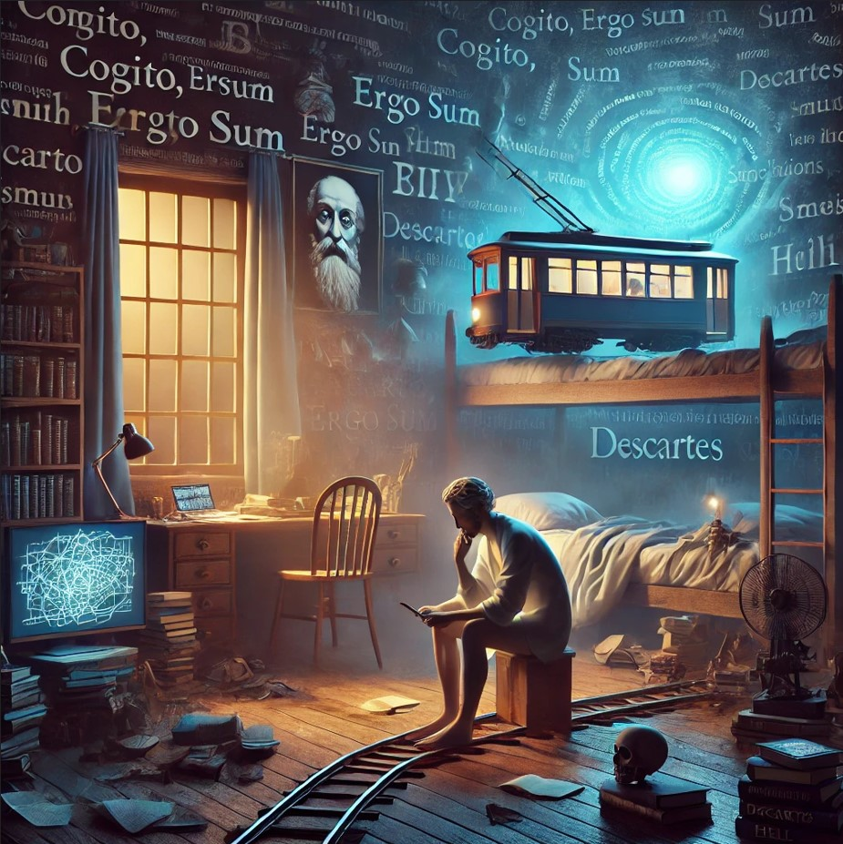

<!DOCTYPE html PUBLIC "-//W3C//DTD HTML 4.01 Transitional//EN" "http://www.w3.org/TR/html4/loose.dtd">
<html>
<head>
  <title>Dake Peng - BIV — 1 of 1</title>
  <meta http-equiv="Content-Type" content="text/html;charset=utf-8" />
  <meta name="author" content="Dake Peng" />
  <meta name="description" content="A page for the game BIV by Dake Peng." />
  <meta name="viewport" content="width=device-width, initial-scale=1.0">
  <link rel="stylesheet" href="custom.css" type="text/css" media="all" />
 </head>

<body>

<div class = "container">

<div class ="sourcecoverimage">
	<span><a href="Cover.jpg"></a></span>
</div>

<div class ="sourceintroduction">
	<h1>
		<span>BIV</span> <span class="pagination"></span>
	</h1>
	<h2>
		<span>Dake Peng</span>
	</h2>
	<div class ="sourcebibliography">
		<span>Release 1</span>
	</div>
</div>

<div class="block-link"><a href="index.html">Home page</a></div>
<div class="block-link"><a href="source.txt">Complete text</a></div>
</ul>
</div>

<div class = "source">
<p class="indent0"><span class="heading">&quot;<span class="quote">BIV</span>&quot; by Dake Peng</span></p><p class="indent0">Include Vorple by Juhana Leinonen.</p><p class="indent0">Release along with the &quot;<span class="quote">Vorple</span>&quot; interpreter.</p><p class="indent0">Release along with a website, cover art, and the source text.</p><p class="indent0">When play begins: say &quot;<span class="quote">You are a philosopher who spends all of the time thinking about the nature of life. What is reality? That is all that matters to you.</span>&quot;;</p><p class="indent0"><span class="comment">[Room: Bedroom]</span></p><p class="indent0">The Bedroom is a room. &quot;<span class="quote">Here you are again, in your messy bedroom. You don't remember how long you have wasted here. Not even the last time you left the room. </span>&quot; </p><p class="indent0">The bedroom door is a scenery in the Bedroom. &quot;<span class="quote">A plain wooden door stands at the edge of the room, a silent reminder of the outside world.</span>&quot; Instead of opening or entering the bedroom door, say &quot;<span class="quote">You have sworn not to leave the room until you figure out the nature of life.</span>&quot;;</p><p class="indent0">The desk is a supporter in the Bedroom. It is fixed in place. The description of the desk is &quot;<span class="quote">It's weirdly clean, like no one has been here in a long time. It has an upper and lower drawer.</span>&quot; Understand &quot;<span class="quote">table</span>&quot; as the desk.</p><p class="indent0">The upper drawer and the lower drawer are parts of the desk. The upper drawer and lower drawer are openable closed containers. In the upper drawer is a peppermint. The peppermint is edible. </p><p class="indent0">The book is in the lower drawer. The description of the book is &quot;<span class="quote">Simulacra and Simulation by Jean Baudrillard. hmmm... You don't remember owning this title.</span>&quot;.</p><p class="indent0">After taking the book:</p><p class="indent1">say &quot;<span class="quote">You took the book, Simulacra and Simulation, by Jean Baudrillard. It may be helpful later.</span>&quot;;</p><p class="indent1">CheckIfPlayerIsReadyForFinale;</p><p class="indent0">The inscription on the wall is in the Bedroom. The description of the inscription on the wall is &quot;<span class="quote">The inscription reads 'Cogito, ergo sum,' which translates to 'I think, therefore I am.' A profound statement by René Descartes. You are tempted to think about the quote.</span>&quot; Understand &quot;<span class="quote">quote</span>&quot; or &quot;<span class="quote">the quote</span>&quot; or &quot;<span class="quote">inscription</span>&quot; or &quot;<span class="quote">the inscription</span>&quot; as the The inscription on the wall. </p><p class="indent0">Understand &quot;<span class="quote">think [</span><span class="substitution">something</span><span class="quote">]</span>&quot; as opening when the player is in the Bedroom. Understand &quot;<span class="quote">think about [</span><span class="substitution">something</span><span class="quote">]</span>&quot; as opening when the player is in the Bedroom. </p><p class="indent0">Understand &quot;<span class="quote">touch [</span><span class="substitution">something</span><span class="quote">]</span>&quot; as opening when the player is in the Bedroom. </p><p class="indent0">TrolleyTrackEntered is a truth state that varies. TrolleyTrackEntered is false.</p><p class="indent0">HellEntered is a truth state that varies. HellEntered is false.</p><p class="indent0"><span class="comment">[Room: Trolley Track]</span></p><p class="indent0">The train model is a supporter in the Bedroom. The description of the train model is  &quot;<span class="quote">A model of a train track lies on the corner of the bedroom. The train is gradually moving forward towards some toy figures on the rail. You are tempted to think about the trolly problem.</span>&quot;. Understand &quot;<span class="quote">the trolley problem</span>&quot; or &quot;<span class="quote">trolley problem</span>&quot; as the Train Model. </p><p class="indent0">The Trolley Track is a room.  &quot;<span class="quote">You are standing next to a lever that controls a trolley track. Ahead of you, the track splits into two branches. On the left branch, five workers are tied to the track. On the right branch, one worker is tied to the track. A trolley is speeding down the track toward the left branch. You can pull the lever to divert the trolley to the right branch --- or you can just wait.</span>&quot;</p><p class="indent0">Instead of opening the train model:</p><p class="indent1">if TrolleyTrackEntered is false:</p><p class="indent2">move the player to the Trolley Track;</p><p class="indent2">now TrolleyTrackEntered is true;</p><p class="indent1">otherwise:</p><p class="indent2">say &quot;<span class="quote">You've already collected the pieces from here. There must be something else to explore.[</span><span class="substitution">paragraph break</span><span class="quote">]</span>&quot;.</p><p class="indent1"></p><p class="indent0">The Lever is a device in the Trolley Track.</p><p class="indent0">Instead of pulling the Lever when player is in the Trolley Track:</p><p class="indent1">say &quot;<span class="quote">You pull the lever, diverting the trolley to the right branch. It will hit the single worker.[</span><span class="substitution">paragraph break</span><span class="quote">]</span>&quot;;</p><p class="indent1">say &quot;<span class="quote">The trolley crushes the single worker, but the five workers on the left branch are saved. You have manifested utilitarianism to its utmost... Congratulations?[</span><span class="substitution">paragraph break</span><span class="quote">]</span>&quot;;</p><p class="indent1">takeleverandleave;</p><p class="indent2"></p><p class="indent0">Instead of waiting when player is in the Trolley Track:</p><p class="indent1">say &quot;<span class="quote">You decided to not pull the lever. The trolley will stay on the left branch. It will hit the five workers.[</span><span class="substitution">paragraph break</span><span class="quote">]</span>&quot;;</p><p class="indent1">say &quot;<span class="quote">The trolley crushes the five workers, but the single worker on the right was saved. Perhaps the choice of destiny.[</span><span class="substitution">paragraph break</span><span class="quote">]</span>&quot;;</p><p class="indent1">takeleverandleave;</p><p class="indent0">To takeleverandleave:</p><p class="indent1">now the lever is portable;</p><p class="indent1">say &quot;<span class="quote">The lever fell off as the train roared by. You decided to pick it up as a souvenir.[</span><span class="substitution">paragraph break</span><span class="quote">]</span>&quot;;</p><p class="indent1">try the player taking the lever;</p><p class="indent1">say &quot;<span class="quote">That was a good thought experiment. You are never tired of revisiting this hard decision.[</span><span class="substitution">paragraph break</span><span class="quote">]</span>&quot;;</p><p class="indent1">CheckIfPlayerIsReadyForFinale;</p><p class="indent1"></p><p class="indent0"><span class="comment">[Room: Decarte's Hell]</span></p><p class="indent0">The Hell is a room. The description of the Hell is &quot;<span class="quote">You stand in a dimly lit chamber, the air heavy with a sense of foreboding. Shadows flicker along the walls, and an eerie silence fills the space. You feel a presence lurking in the corners, waiting. This is no ordinary placeit is a realm where reality itself may be questioned, distorted, and manipulated. It is the birthplace of doubt, where the mind is tested against its deepest uncertainties. [</span><span class="substitution">paragraph break</span><span class="quote">]You recall a philosophical ideaDescartes[</span><span class="substitution">'</span><span class="quote">] Demon. Descartes, a renowned philosopher, once pondered the possibility of a powerful demon who could deceive you in every way, even controlling your thoughts, making you believe in an existence that isn't real. He suggested that all the senses, all perception of the world around you, could be illusions crafted by this malevolent force. In this place, you might be confronted by that very demon, a being whose sole purpose is to distort your reality and plunge you into doubt about everything you believe to be true.</span>&quot;.</p><p class="indent0">Instead of opening the inscription on the wall:</p><p class="indent1">if HellEntered is false:</p><p class="indent2">move the player to the  Hell;</p><p class="indent2">now HellEntered is true;</p><p class="indent1">otherwise:</p><p class="indent2">say &quot;<span class="quote">You've already collected the pieces from here. There must be something else to explore[</span><span class="substitution">paragraph break</span><span class="quote">]</span>&quot;.</p><p class="indent1"></p><p class="indent1"></p><p class="indent0">The Demon is a person in the Hell. The description of the Demon is &quot;<span class="quote">A shadowy, enigmatic figure with piercing, otherworldly eyes and an aura of malevolent power, embodying the ability to warp reality and twist the truth at will.</span>&quot;.</p><p class="indent0">The Demon can be greeted or ungreeted. The Demon is ungreeted.</p><p class="indent0">Greeting is an action applying to one thing.</p><p class="indent0">Leaving is an action applying to one thing.</p><p class="indent0">Understand &quot;<span class="quote">greet [</span><span class="substitution">thing</span><span class="quote">]</span>&quot; or &quot;<span class="quote">say hello to [</span><span class="substitution">thing</span><span class="quote">]</span>&quot; or &quot;<span class="quote">say hi to [</span><span class="substitution">thing</span><span class="quote">]</span>&quot; or &quot;<span class="quote">wave to [</span><span class="substitution">thing</span><span class="quote">]</span>&quot; or &quot;<span class="quote">hello [</span><span class="substitution">thing</span><span class="quote">]</span>&quot; as greeting.</p><p class="indent0">Understand &quot;<span class="quote">ungreet [</span><span class="substitution">thing</span><span class="quote">]</span>&quot; or &quot;<span class="quote">say goodbye to [</span><span class="substitution">thing</span><span class="quote">]</span>&quot; or &quot;<span class="quote">say bye to [</span><span class="substitution">thing</span><span class="quote">]</span>&quot; or &quot;<span class="quote">wave to [</span><span class="substitution">thing</span><span class="quote">]</span>&quot; or &quot;<span class="quote">bye [</span><span class="substitution">thing</span><span class="quote">]</span>&quot; as leaving.</p><p class="indent0">Check greeting:</p><p class="indent1">if the noun is not the Demon, say &quot;<span class="quote">There's no point in greeting that.</span>&quot; instead.</p><p class="indent1"></p><p class="indent0">Carry out greeting the Demon:</p><p class="indent1">if the Demon is ungreeted:</p><p class="indent2">now the Demon is greeted;</p><p class="indent2">say &quot;<span class="quote">The demon's eyes glimmer with intrigue. 'Ah, a philosopher. Welcome, seeker of truth. I have waited for one who dares to question the very nature of existence. Shall we begin?'</span>&quot;;</p><p class="indent1">otherwise:</p><p class="indent2">say &quot;<span class="quote">The demon folds its hands, a faint smile playing on its lips. 'Weve already exchanged pleasantries, philosopher. Let us not delay the questions that linger in your mind.'</span>&quot;</p><p class="indent0">Check leaving:</p><p class="indent1">if the noun is not the Demon, say &quot;<span class="quote">There's no point in saying bye to that.</span>&quot; instead.</p><p class="indent0">The Hell Hidden is a room. </p><p class="indent0">Demon's Wisdom is in the Hell Hidden. Demon's Wisdom is portable.</p><p class="indent0">MeaningfulQuetionAskedtoDemon is a truth state that varies. MeaningfulQuetionAskedtoDemon is False.</p><p class="indent0"><span class="comment">[Ending: Trapped by Demon]</span></p><p class="indent0">Carry out leaving the Demon:</p><p class="indent1">now the Demon is ungreeted;</p><p class="indent1">if MeaningfulQuetionAskedtoDemon is False:</p><p class="indent2">say &quot;<span class="quote">The demons expression darkens, its grin vanishing as it narrows its eyes with a sharp, frustrated glare. 'You havent entertained me with your questions,' it growls, its voice thick with anger. 'How disappointing.' With a flick of its wrist, the world around you begins to twist and distort, layers upon layers of simulations folding in on themselves. The demons eyes burn with disdain as it hisses, 'Now, youll remain here forever, trapped in a mockery of realityyour eternal prison for wasting my time.'</span>&quot;;</p><p class="indent2">end the story finally saying &quot;<span class="quote">And so, you are left alone in the endless loop, trapped in the demons simulated maze, forever questioning, never entertaining, never escaping.</span>&quot;;</p><p class="indent1">otherwise:</p><p class="indent2">now Demon's Wisdom is in hell;</p><p class="indent2">say &quot;<span class="quote">You have recieved some wisdom from the demon. It might help you later.</span>&quot;;</p><p class="indent2">Try the player taking Demon's Wisdom;</p><p class="indent2">CheckIfPlayerIsReadyForFinale;</p><p class="indent1"></p><p class="indent0">Instead of asking the Demon about something when the Demon is ungreeted:</p><p class="indent1">say &quot;<span class="quote">The demon doesn't respond. Perhaps you should greet it first.</span>&quot;</p><p class="indent0">After asking the Demon about something:</p><p class="indent1">respond to the demon-question;</p><p class="indent0">Demon Question Found is a truth state that varies. Demon Question Found is false.</p><p class="indent0">To respond to the demon-question:</p><p class="indent1">now Demon Question Found is False;</p><p class="indent1">choose a random row in the Table of Demon Reactions;</p><p class="indent1">let the selected reaction be the reaction  entry;</p><p class="indent1">repeat through the Table of Wise Answers-Demon:</p><p class="indent2">if the topic understood includes topic entry:</p><p class="indent3">if the current question is the question type entry:</p><p class="indent4">say &quot;<span class="quote">[</span><span class="substitution">selected reaction</span><span class="quote">] '[</span><span class="substitution">reply entry</span><span class="quote">]'[</span><span class="substitution">paragraph break</span><span class="quote">]</span>&quot;;</p><p class="indent4">now the Demon Question Found is True;</p><p class="indent4">now MeaningfulQuetionAskedtoDemon is True;</p><p class="indent1">if Demon Question Found is False:</p><p class="indent2">choose a random row in the Table of Fake Answers-Demon;</p><p class="indent2">let the selected reply be the reply entry;</p><p class="indent2">say &quot;<span class="quote">[</span><span class="substitution">selected reaction</span><span class="quote">] '[</span><span class="substitution">selected reply</span><span class="quote">]'[</span><span class="substitution">paragraph break</span><span class="quote">]</span>&quot;;</p><p class="indent2"></p><p class="indent0"><span class="comment">[Demon Tables]</span></p><p class="indent0">Table of Demon Reactions  </p><p class="indent0">reaction  </p><p class="indent0">&quot;<span class="quote">The demon grins, its lips curling slowly as it leans back, clearly amused.</span>&quot;  </p><p class="indent0">&quot;<span class="quote">The demon smirks, crossing its arms and tapping its foot impatiently, as if youre wasting its time.</span>&quot;  </p><p class="indent0">&quot;<span class="quote">The demon rolls its eyes dramatically, exhaling with a heavy sigh, clearly unimpressed.</span>&quot;  </p><p class="indent0">&quot;<span class="quote">The demon chuckles softly, its head tilting slightly to one side, watching you with a look of mock sympathy.</span>&quot;  </p><p class="indent0">&quot;<span class="quote">The demon tilts its head, narrowing its eyes with a slow, deliberate motion, as though considering whether to bother answering.</span>&quot;  </p><p class="indent0">&quot;<span class="quote">The demon grins wider, leaning in closer, its eyes flashing with a strange, unnerving intensity.</span>&quot;  </p><p class="indent0">&quot;<span class="quote">The demon laughs lightly, its body shaking with silent mirth, before it straightens up, taking a deep, exaggerated breath.</span>&quot;  </p><p class="indent0">&quot;<span class="quote">The demon raises an eyebrow, a sharp, mocking movement that seems to pierce through you.</span>&quot;  </p><p class="indent0">&quot;<span class="quote">The demon leans forward with exaggerated seriousness, staring at you with an intense, unnerving gaze.</span>&quot;  </p><p class="indent0">&quot;<span class="quote">The demon sneers, its eyes narrowing as it flicks its tongue over its lips, clearly savoring your discomfort.</span>&quot;  </p><p class="indent0">Table of Wise Answers-Demon  </p><p class="indent0">topic question type reply  </p><p class="indent0">&quot;<span class="quote">life</span>&quot; what &quot;<span class="quote">Oh, life? You mean that overly complex algorithm meant to keep you busy? Sure, lets call it life.</span>&quot;  </p><p class="indent0">&quot;<span class="quote">life</span>&quot; why &quot;<span class="quote">Why? Because every simulation needs an entertaining subplot, and youre the lead character. Congrats!</span>&quot;  </p><p class="indent0">&quot;<span class="quote">trolley/trolley problem</span>&quot; what &quot;<span class="quote">Ah, the trolley problem! As if your simulated choices actually matter. Flip the switch, dont flip itwho cares?</span>&quot;  </p><p class="indent0">&quot;<span class="quote">trolley/trolley problem</span>&quot; why &quot;<span class="quote">Why bother? The tracks were programmed to split long before you arrived. Its all preordained code.</span>&quot;  </p><p class="indent0">&quot;<span class="quote">simulation/simulacra</span>&quot; what &quot;<span class="quote">Simulation? Oh no, its definitely realreal in the sense that your favorite video game is 'real.' Sure.</span>&quot;  </p><p class="indent0">&quot;<span class="quote">Baudrillard</span>&quot; who &quot;<span class="quote">A guy who almost figured it out. Too bad he never cracked the source code. Nice try, though.</span>&quot;  </p><p class="indent0">&quot;<span class="quote">me/myself/conscience</span>&quot; who &quot;<span class="quote">You? Oh, just a self-obsessed line of code pretending to be sentient. Cute, really.</span>&quot;  </p><p class="indent0">&quot;<span class="quote">me/myself/conscience</span>&quot; what &quot;<span class="quote">What are you? A puppet with strings you cant see, dancing to a script you didnt write. But hey, keep pondering.</span>&quot;  </p><p class="indent0">&quot;<span class="quote">room</span>&quot; what &quot;<span class="quote">Your 'room'? Let me guessyou think the walls are real? Adorable. Its just some well-rendered polygons.</span>&quot;  </p><p class="indent0">&quot;<span class="quote">rain/weather/clouds/cloud/rains</span>&quot; what &quot;<span class="quote">Oh yes, the rain. Such a convincing little feature of the simulation, isnt it? Almost poetic.</span>&quot;  </p><p class="indent0">&quot;<span class="quote">rain/weather/clouds/cloud/rains</span>&quot; where &quot;<span class="quote">Where does it come from? From the simulations weather engine, obviously. What did you expect?</span>&quot;  </p><p class="indent0">&quot;<span class="quote">hunger/food/eating</span>&quot; when &quot;<span class="quote">When will it end? Never, because the system demands loops. Hunger, eat, repeathow thrilling.</span>&quot;  </p><p class="indent0">&quot;<span class="quote">hunger/food/eating</span>&quot; why &quot;<span class="quote">Why hunger? Because if you werent busy eating, you might notice the cracks in the simulation. Cant have that.</span>&quot;  </p><p class="indent0">&quot;<span class="quote">technology/innovation/progress</span>&quot; why &quot;<span class="quote">Progress? Oh, thats rich. Youre just upgrading the simulation, not escaping it. But sure, call it 'progress.'</span>&quot;  </p><p class="indent0">&quot;<span class="quote">labor/work/employment</span>&quot; how &quot;<span class="quote">Work hard, they said. Fulfill your purpose, they said. Too bad the purpose is just busywork for the program.</span>&quot;  </p><p class="indent0">&quot;<span class="quote">labor/work/employment</span>&quot; why &quot;<span class="quote">Why work? Because idle simulations tend to ask too many questions, and we cant have you breaking the system, can we?</span>&quot;  </p><p class="indent0">&quot;<span class="quote">education/learning/knowledge</span>&quot; what &quot;<span class="quote">Knowledge? Ha! The simulation loves giving you puzzles youll never solve. Keeps you out of trouble.</span>&quot;  </p><p class="indent0">&quot;<span class="quote">education/learning/knowledge</span>&quot; how &quot;<span class="quote">How? By feeding you just enough data to feel smart, but not enough to escape. Clever, right?</span>&quot;  </p><p class="indent0">&quot;<span class="quote">entertainment/art/recreation</span>&quot; what &quot;<span class="quote">Art is the simulations way of keeping you amused while the real work happens elsewhere. Enjoy your distractions.</span>&quot;  </p><p class="indent0">&quot;<span class="quote">entertainment/art/recreation</span>&quot; why &quot;<span class="quote">Why art? Because even simulations need filler content. Keeps you from getting bored and noticing the seams.</span>&quot;  </p><p class="indent0">&quot;<span class="quote">Descartes</span>&quot; who &quot;<span class="quote">The guy who almost exposed the simulation with his 'I think, therefore I am' shtick. Too bad he stopped there.</span>&quot;  </p><p class="indent0">&quot;<span class="quote">experience</span>&quot; what &quot;<span class="quote">Experience is just data input for the simulations mainframe. Youre basically a glorified sensor.</span>&quot;  </p><p class="indent0">&quot;<span class="quote">illusion/dreams</span>&quot; what &quot;<span class="quote">Oh, dreams? Yeah, those are the simulations beta tests. Some bugs, some features, all nonsense.</span>&quot;  </p><p class="indent0">&quot;<span class="quote">illusion/dreams</span>&quot; why &quot;<span class="quote">Why illusions? Because the simulation runs smoother when you think youre in control. Spoiler: youre not.</span>&quot;  </p><p class="indent0">Table of Fake Answers-Demon  </p><p class="indent0">reply  </p><p class="indent0">&quot;<span class="quote">I dont know, but have you ever thought that maybe this is all just a glorified simulation? Nah, probably notwhy would anyone program *you* into it, right?</span>&quot;  </p><p class="indent0">&quot;<span class="quote">I dont think it matters either way. But hey, have you noticed how everything *feels* a little off sometimes? Oh, right, thats just a *glitch*dont worry about it.</span>&quot;  </p><p class="indent0">&quot;<span class="quote">Thats a *great* question. But doesnt it seem like were just puppets going through some preordained motions? But sure, keep thinking you have control over anything.</span>&quot;  </p><p class="indent0">&quot;<span class="quote">Is it even possible to know for sure? I mean, if were in a simulation, how could you ever be sure? Oh wait, youre probably not supposed to figure that out.</span>&quot;  </p><p class="indent0">&quot;<span class="quote">Its not clear. But hey, what if reality is just a simulation to see how *pathetically* we react to uncertainty? Wouldnt that be hilarious?</span>&quot;  </p><p class="indent0">&quot;<span class="quote">Im not sure, but Ive been reading about simulations and, honestly, it feels like reality itself is a *bad* illusion. But dont worry, youre definitely the most important part of it*not*.</span>&quot;</p><p class="indent0"><span class="comment">[Room: Finale]</span></p><p class="indent0">The Finale is a room. </p><p class="indent0">Instead of looking in the Finale:</p><p class="indent1">say &quot;<span class="quote">It seems that you have created all the pieces to the nature of life. You decided to ask yourself 3 final questions to confirm your thoughts.</span>&quot;;</p><p class="indent0">The Self is a person in the Finale. The description of the Self is &quot;<span class="quote">Here are the tenets you've lived by and learned in the many years of your life</span>&quot;. Understand &quot;<span class="quote">myself</span>&quot; and &quot;<span class="quote">me</span>&quot; as The Self.</p><p class="indent0">Final Question Answered is a truth state that varies. Final Question Answered is false.</p><p class="indent0">After reading a command when the command prompt is &quot;<span class="quote">So what is the nature of life, really?</span>&quot;:</p><p class="indent1">let N be the player's command;</p><p class="indent1">if N includes &quot;<span class="quote">simulation</span>&quot; or N includes &quot;<span class="quote">brain in vat</span>&quot; or N includes &quot;<span class="quote">simulacra</span>&quot;:</p><p class="indent2">say &quot;<span class="quote">You were a brain in the vat indeed. You began to feel the world distorting in a dazzling white light. Things are starting to shift around.</span>&quot;;</p><p class="indent2">now Final Question Answered is true;</p><p class="indent1">otherwise:</p><p class="indent2">say &quot;<span class="quote">That's not quite the answer you were seeking.</span>&quot;;</p><p class="indent1">if Final Question Answered is true:</p><p class="indent2">move the player to the Reality;</p><p class="indent2">now the command prompt is &quot;<span class="quote">&gt;</span>&quot;;</p><p class="indent2">end the story finally saying &quot;<span class="quote">Welcome back to the reality. Or is this just another simulation?</span>&quot;;</p><p class="indent1">reject the player's command;</p><p class="indent0"><span class="comment">[Ending: Back to Reality?]</span></p><p class="indent0">The Reality is a room. &quot;<span class="quote">You begin to feel your feet landing on something solid again, and your body, and everything... You are pulled out of the simulation you previously were in.</span>&quot;</p><p class="indent0"><span class="comment">[Conversational Character General]</span></p><p class="indent0">Interrogative is a kind of value. The interrogatives are who, what, when, where, how, and why.</p><p class="indent0">Understand &quot;<span class="quote">ask [</span><span class="substitution">someone</span><span class="quote">] [</span><span class="substitution">text</span><span class="quote">]</span>&quot; as asking it about.</p><p class="indent0">After reading a command when the player is in the Finale:</p><p class="indent1">if the player's command includes &quot;<span class="quote">[</span><span class="substitution">interrogative</span><span class="quote">]</span>&quot;, now the current question is the interrogative understood.</p><p class="indent0">After reading a command when the player is in the Hell:</p><p class="indent1">if the player's command includes &quot;<span class="quote">[</span><span class="substitution">interrogative</span><span class="quote">]</span>&quot;, now the current question is the interrogative understood.</p><p class="indent0"><span class="comment">[Conversational Character: My Self]</span></p><p class="indent0">Current question is an interrogative that varies.</p><p class="indent0">Self Question Count is a number that varies. Self Question Count is 0.</p><p class="indent0">The Self can be active or inactive. The Self is active.</p><p class="indent1"></p><p class="indent0">Instead of asking the Self about something when the Self is inactive:</p><p class="indent1">say &quot;<span class="quote">Come on. You have had the chance already.</span>&quot;</p><p class="indent1"></p><p class="indent0">After asking the Self about something:</p><p class="indent1">now Self Question Count is Self Question Count  + 1;</p><p class="indent1">respond to the self-question;</p><p class="indent1">if Self Question Count is 3:</p><p class="indent2">now the Self is inactive;</p><p class="indent2">say &quot;<span class="quote">'Enough'. You thought to yourself. 'Engough meditation'. You are ready to give the answer.</span>&quot;;</p><p class="indent2">now the command prompt is &quot;<span class="quote">So what is the nature of life, really?</span>&quot;;</p><p class="indent2"></p><p class="indent0">Self Question Found is a truth state that varies. Self Question Found is false.</p><p class="indent0">To respond to the self-question:</p><p class="indent1">now Self Question Found is False;</p><p class="indent1">repeat through the Table of Wise Answers-Self:</p><p class="indent2">if the topic understood includes topic entry:</p><p class="indent3">if the current question is the question type entry:</p><p class="indent4">say &quot;<span class="quote">[</span><span class="substitution">reply entry</span><span class="quote">][</span><span class="substitution">paragraph break</span><span class="quote">]</span>&quot;;</p><p class="indent4">now the Self Question Found is True;</p><p class="indent1">if Self Question Found is False:</p><p class="indent2">choose a random row in the Table of Fake Answers-Self;</p><p class="indent2">let the selected reply be the reply entry;</p><p class="indent2">say &quot;<span class="quote">[</span><span class="substitution">selected reply</span><span class="quote">][</span><span class="substitution">paragraph break</span><span class="quote">]</span>&quot;;</p><p class="indent2"></p><p class="indent0"><span class="comment">[Self Tables]</span></p><p class="indent0">Table of Wise Answers-Self</p><p class="indent0">topic question type reply</p><p class="indent0">&quot;<span class="quote">life</span>&quot; what &quot;<span class="quote">Is it merely a sequence of events, or something moreperhaps a loop we cannot see?</span>&quot;</p><p class="indent0">&quot;<span class="quote">life</span>&quot; why &quot;<span class="quote">Perhaps we exist to fulfill a purpose written before our understanding of it.</span>&quot;</p><p class="indent0">&quot;<span class="quote">trolley/trolley problem</span>&quot; what &quot;<span class="quote">Does the track ahead truly diverge, or is it simply a construct of choices laid out for us?</span>&quot;</p><p class="indent0">&quot;<span class="quote">trolley/trolley problem</span>&quot; why &quot;<span class="quote">Maybe it's not about choice at all, but a question of who is controlling the switch.</span>&quot;</p><p class="indent0">&quot;<span class="quote">simulation/simulacra</span>&quot; what &quot;<span class="quote">Is reality truly real, or just an intricate pattern within a larger algorithm?</span>&quot;</p><p class="indent0">&quot;<span class="quote">Baudrillard</span>&quot; who &quot;<span class="quote">A mind who questioned the lines between the real and the simulated, perhaps seeking answers from the other side.</span>&quot;</p><p class="indent0">&quot;<span class="quote">me/myself/conscience</span>&quot; who &quot;<span class="quote">You are a program running through a codeare you the creator, or merely the creation?</span>&quot;</p><p class="indent0">&quot;<span class="quote">me/myself/conscience</span>&quot; what &quot;<span class="quote">Is what you call 'you' a construct of your own making, or an echo of something beyond your perception?</span>&quot;</p><p class="indent0">&quot;<span class="quote">room</span>&quot; what &quot;<span class="quote">Is this space truly contained, or are the walls just projections within a greater simulation?</span>&quot;</p><p class="indent0">&quot;<span class="quote">rain/weather/clouds/cloud/rains</span>&quot;  what &quot;<span class="quote">Is it the rain that falls, or merely the program running its cycles again?</span>&quot;</p><p class="indent0">&quot;<span class="quote">rain/weather/clouds/cloud/rains</span>&quot;  where &quot;<span class="quote">Where do the drops come from? Perhaps from the endless code that surrounds you.</span>&quot;</p><p class="indent0">&quot;<span class="quote">hunger/food/eating</span>&quot; when &quot;<span class="quote">When does the need end, or is the cycle of hunger one that is continuously reprogrammed?</span>&quot;</p><p class="indent0">&quot;<span class="quote">hunger/food/eating</span>&quot; why &quot;<span class="quote">Because in this world, we are bound by the need to consume, but maybe that's just a simulation of desire.</span>&quot;</p><p class="indent0">&quot;<span class="quote">technology/innovation/progress</span>&quot;  why &quot;<span class="quote">Is it progress, or simply the illusion of movement within a closed system?</span>&quot;</p><p class="indent0">&quot;<span class="quote">labor/work/employment</span>&quot; how &quot;<span class="quote">We work to fulfill a purpose, but the question remains: is the purpose ours, or part of the design?</span>&quot;</p><p class="indent0">&quot;<span class="quote">labor/work/employment</span>&quot; why &quot;<span class="quote">Perhaps work is the illusion that keeps the simulation running smoothly, keeping you occupied while the code compiles.</span>&quot;</p><p class="indent0">&quot;<span class="quote">education/learning/knowledge</span>&quot;  what &quot;<span class="quote">Is knowledge the key to unlocking the simulation, or is it merely a tool given to you to play within it?</span>&quot;</p><p class="indent0">&quot;<span class="quote">education/learning/knowledge</span>&quot;  how &quot;<span class="quote">Through repetition, through systems designed to lead you to the edge of understanding without ever crossing it.</span>&quot;</p><p class="indent0">&quot;<span class="quote">entertainment/art/recreation</span>&quot;  what &quot;<span class="quote">Art is a reflection of the world, but what if the reflection is the only thing that is real?</span>&quot;</p><p class="indent0">&quot;<span class="quote">entertainment/art/recreation</span>&quot;  why &quot;<span class="quote">Perhaps it is the desire to escape the simulation that fuels our need for art and recreation.</span>&quot;</p><p class="indent0">Table of Fake Answers-Self</p><p class="indent0">reply</p><p class="indent0">&quot;<span class="quote">I dont know, but have you ever wondered if this is all just part of some program?</span>&quot;</p><p class="indent0">&quot;<span class="quote">I don't think it matters either way. But have you noticed how strange things sometimes feel... like glitches?</span>&quot;</p><p class="indent0">&quot;<span class="quote">Thats a good question. But doesnt it seem like were just going through motions that someone else set up for us?</span>&quot;</p><p class="indent0">&quot;<span class="quote">Is it even possible to know for sure? If we were in a simulation, how could we be certain of anything?</span>&quot;</p><p class="indent0">&quot;<span class="quote">Its not clear. But sometimes, I catch myself thinkingwhat if reality is just a simulation to see how we react to uncertainty?</span>&quot;</p><p class="indent0">&quot;<span class="quote">I'm not sure, but Ive been reading about simulations and it feels like reality itself might be an illusion.</span>&quot;</p><p class="indent0"><span class="comment">[game logic]</span></p><p class="indent0">To CheckIfPlayerIsReadyForFinale:</p><p class="indent1">if the player has the lever and the player has the book and the player has Demon's Wisdom:</p><p class="indent2">move the player to the Finale;</p><p class="indent1">otherwise: </p><p class="indent2">if the player is not in the Bedroom:</p><p class="indent3">move the player to the Bedroom;</p>
</div>

</body>

</html>
